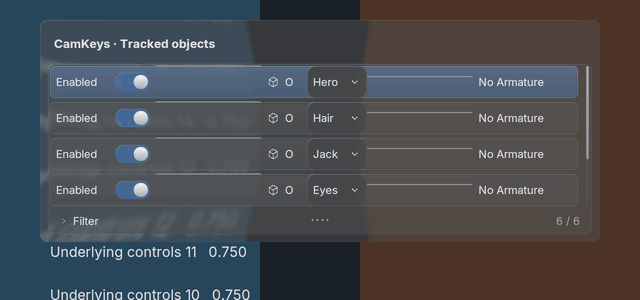
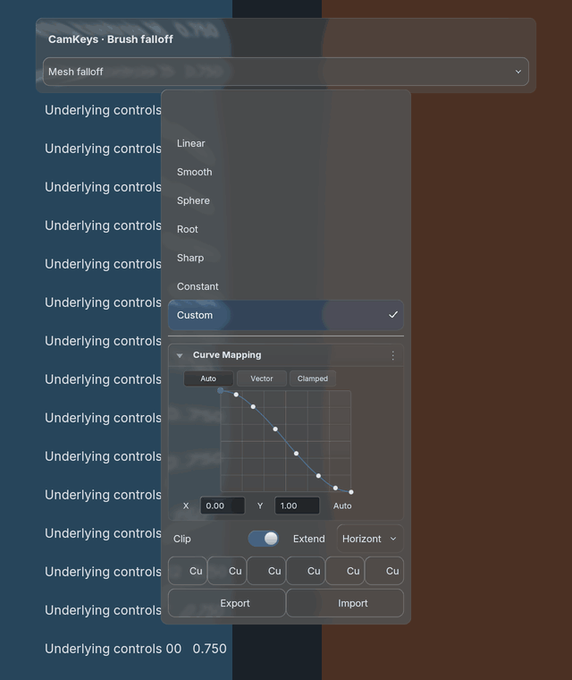

← Feature overview · Core controls review
CamKeys · Lists & brush curves
Current implementation captures from the isolated CamKeys branch. Ready for your visual review; known defects are listed below.
Real Blender GPU rendering · 5.2.2 LTS · macOSThese use the actual registered CamKeys list and popover bodies, production BVT glass and motion, native text batching, and owner-aware right-click menus. The background is a controlled text/contrast fixture. This is an offscreen render, not a screenshot of the installed live add-on.
PNG originals are 1280 × 1520 at 2× scale. GIFs are reduced to 640px wide; the list movie is cropped to its content. Use PNGs for color, typography and edge inspection.
Single-line integration unchanged. Live CamKeys untouched. Final capture run: no activation events or focus changes; zero focus-restore requests. One shared glass production across the capture sequence.
Motion review
Watch the opening bounce, point movement, and context-menu labels together. Static frames below make it easier to inspect details.
CamKeys tracked-object list: selection, scrolling and context menu

3 seconds: select → scroll → open menu → close.
CamKeys brush falloff: opening bounce, point edit and context menu

3.5 seconds: reveal → drag point → open handle menu → close.
Known issues · not accepted as final styling
- Explicit text="" is replaced with RNA display names: list rows are crowded and object names truncated.
- Curve preset buttons show truncated Curve Preset labels; the requested preset icon glyphs are not mapped.
- The untitled consumer popover reserves a blank title area; header spacing needs review.
- Generated-reference exact matching is not established. Light-theme glass and contrast need Tyler review.
The blank rows in an early capture were a fixture error: scrolling now goes through the widget event route, and visible row ownership is asserted. The crowded labels and preset glyph gaps above are real implementation findings.
List & right-click detail
All three consumer brush popovers
Owner menu & motion frames
Theme roles
Factory dark is used above. The following are synthetic light and purple theme inputs through the normal extraction path, not installed Blender theme presets. Compare readable text, highlights, field contrast and glass.
Your review checklist
- List density, name readability, icons and switch size.
- Brush point motion, curve thickness, field alignment and preset buttons.
- Glass blur/rims over the contrasting text background, including nested context menus.
- Menu text and icons moving together during opening; resting geometry after settling.
- Dark/light/purple theme contrast and consistent control scale.
Generated-reference matching and your acceptance remain pending. The captures do not requalify every context action, platform or UI scale.
Full-resolution raw motion frames (ZIP) · Provenance, source hashes and coverage · Runtime and focus audit · Earlier functional checks